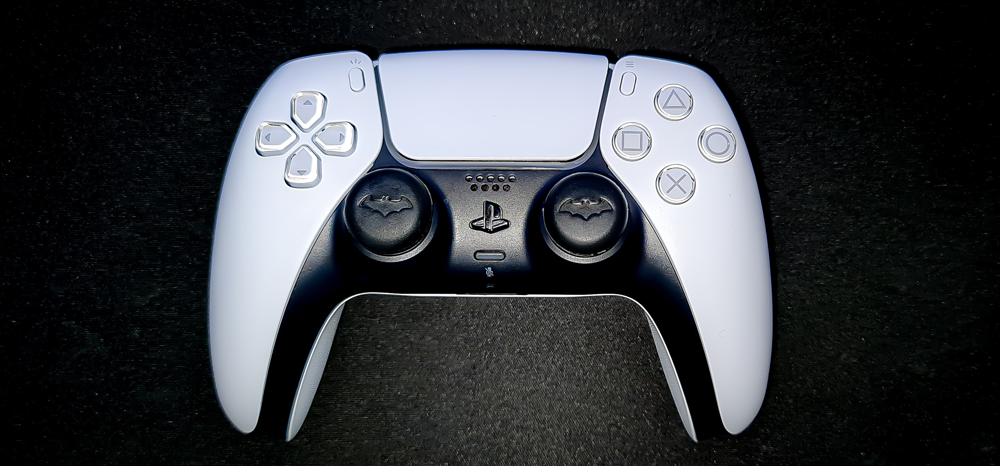
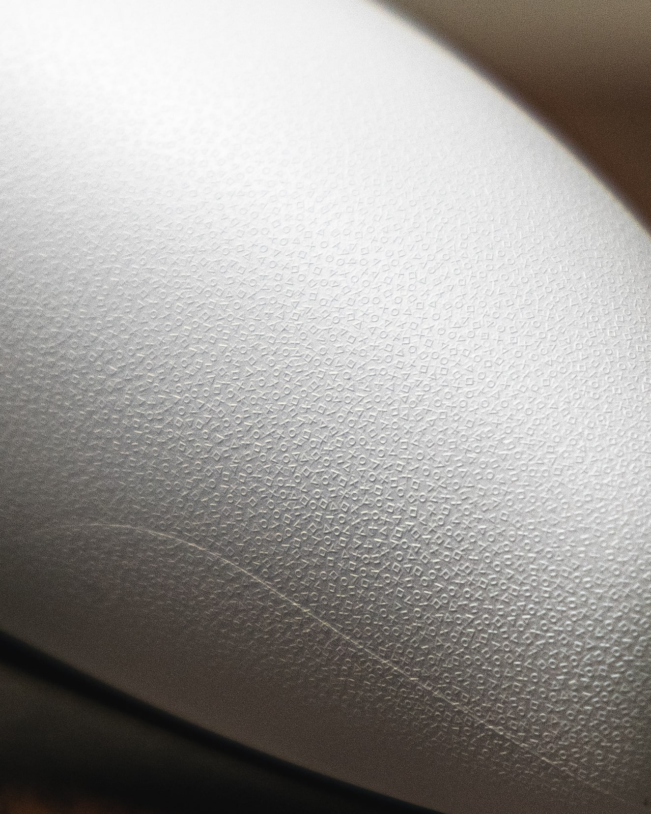

PS5: The Hype is Real
Release Date: 19/11/2020
I don't know where to even begin with this. I don't even know if I should call it a review. Ladies and gentlemen, the day finally arrived. The PlayStation 5 has landed, with all its glory, and might, sexy curves, liquid metal cooling, sleek design. At this I'm just making up shit as I go along. And I've only just started this damn post.
Here we go, I'm going to my best to convey to you what this beautiful piece of machinery is worth, what it can do and why this DualSense Wireless Controller is the greatest controller this world has ever seen.
Let's start off with the unboxing. We all got told the PS5 is going to be huge, but daaaammmnnnn soooon … It's soo big (that's what she said, I know). But it is, biggest I've seen (that's what she said). Look enough, jokes aside, it's big, it's sexy and it is damn phenomenal (that's what she said … about me) oh yeah … I'm totally not a cocky bugger, humbly bragging about my new PS5. Yeah right Kish, and the sky isn't blue. Shut the hell up and tell these people why the PS5 is the best thing you own.
Built like a Beast
With its impressive hardware, namely SSD, two big cooling fans and the AMD Radeon™ GPU, and all the
other technical stuff. If you want to know the literally ins of the PS5, watch the teardown video. For
me the most impressive part of this PS5, is that because of the sheer bad-assery that is the System on a
Chip is running at such a high rate, Sony utilized liquid metal as the thermal interface material to
ensure long-term, stable, high cooling performance. But that doesn't mean it can't heat up, and if it
does, the PS5 system will display a warning about it. But unlike the PS4, when this thing gets going,
there is no jet engine, just a silent stream of air. It sounds weird, but it's the best way I can
explain it. A beast of a machine, with the power and sound of the wind.
DualSense … more like Every Sense
The controller for the senses. Sony's DualSense controller is revolutionary for any gamer. Now you all have probably heard of the new features like the adaptive triggers or the haptic feedback. But what in God's name are those things. Let's start with the adaptive triggers. L2 and R2 have in place this feature that gives pressing the button a real feel. For example, take Call Of Duty. Before, on the PS4's controller, a light press and the triggers go down. But now, you really have to give it a press to fire the gun, and the feeling. Oh god that sensation. The haptic feedback is felt at every part of the controller, is an absolute sensation that travels from the tip of your finger, through your hands, up your arms and you truly feel every aspect of what you are playing.

So, for any of you fortunate people who own a PS5, I urge you to play Astro's Playroom. This
is a game that comes with the PS5, and will truly let you feel every aspect of the controller.
Walking through some grass, you feel the feedback on the left when the grass moves on your left, the
same on the right. And if that's not reason enough to play it, then maybe this will be. Astro's
Playroom is a game, that takes you back in time through the historical artefacts of the
PlayStation. Even things you didn't know existed. It's a fun game, cute features and so many damn
Easter Eggs, it may as well be Easter time. People, play the damn thing. I felt like a kid
again.
And just a minor detail, the texture on the back of the controller is the PS symbols. Oh and if
you're wondering why I have the Bat symbol on my analog sticks … the answer is just because I
can.

Moves like the Wind, only Quieter
Oh, the speed of this thing is undeniable. Playing at 60fps, upscaled to 4k (not native … yet), the loading times of games and replaying of old ones makes the experience completely brand new, and literally streamlined. YouTube channel gameranx did a bunch of tests on the PS5, one of them being on how quick the loading times are from PS4 to PS5. I'm not going to say anything, I'd let the results speak for themselves.| Game | PS4 | PS5 |
|---|---|---|
| Final Fantasy XII | ~35 seconds | ~20 seconds |
| God of War | ~48 seconds | ~26 seconds |
| Journey | ~33 seconds | ~29 seconds |
| Spider-Man | ~59 seconds | ~15 seconds |
Get yourself a PS5
People I cannot believe the power, the beauty, the happiness in my heart and the feeling of
owning and playing on the PS5. I know it is ridiculously expensive, but save up, and get one.
You will NOT be disappointed. And if you're not a Sony PlayStation fan, there is always the Xbox
Series X, so have fun over there.
For now, I'll be in hibernation, playing AC Valhalla, Spider-Man: Miles Morales, Watch
Dogs: Legion, Immortals Fenyx Rising and Cyberpunk 2077. And hopefully those reviews will
follow.
Till next time, JoKishler out! (╯°□°）╯︵ ┻━┻)